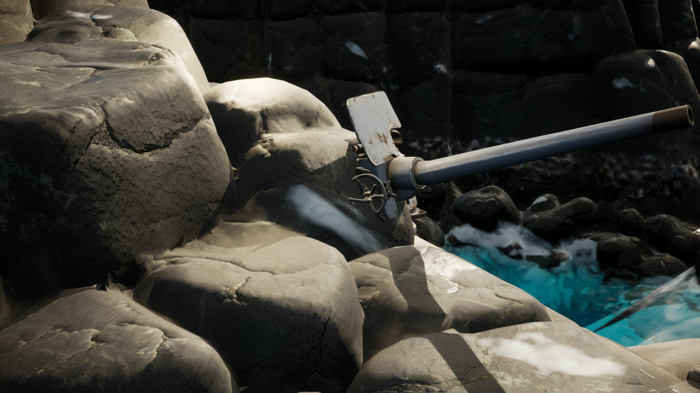
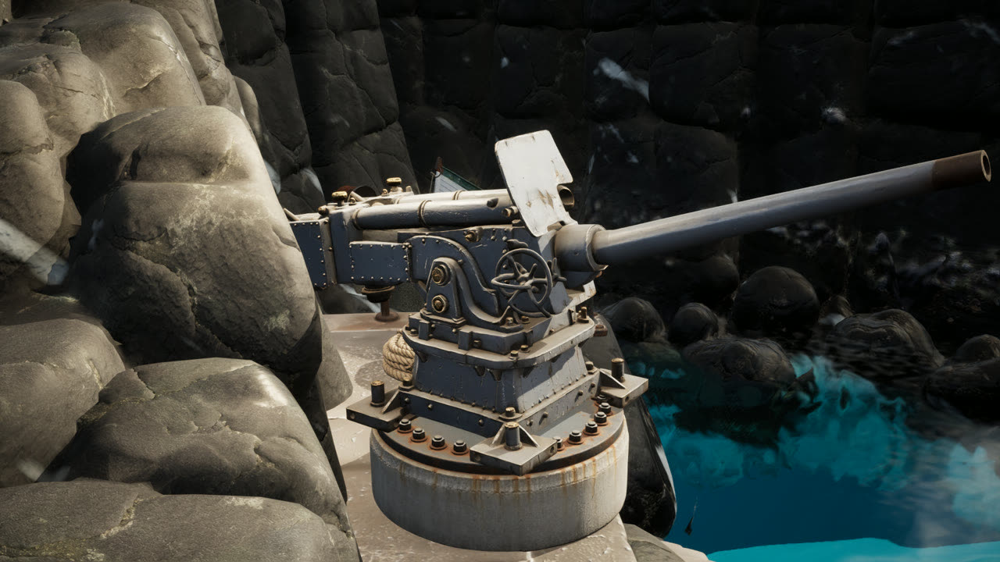
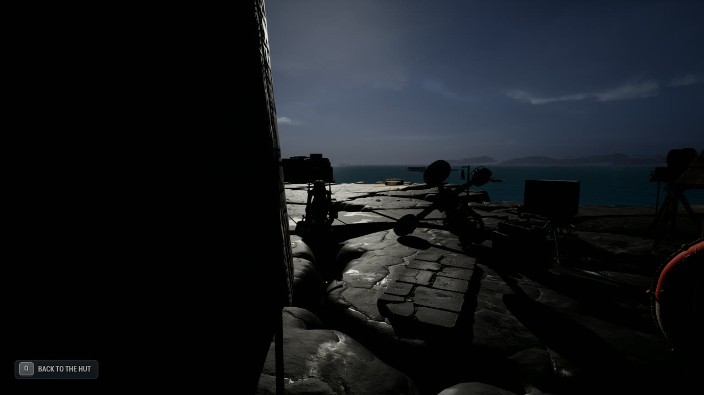
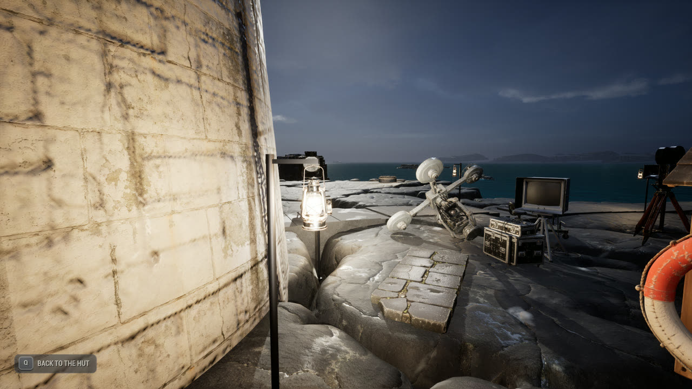
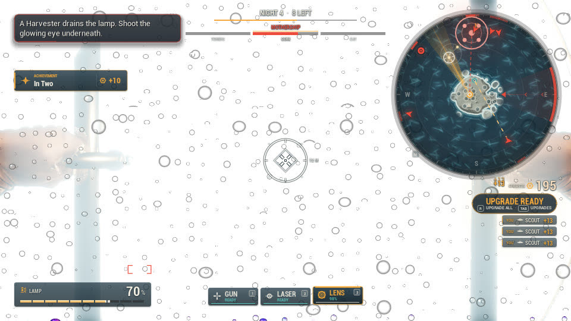
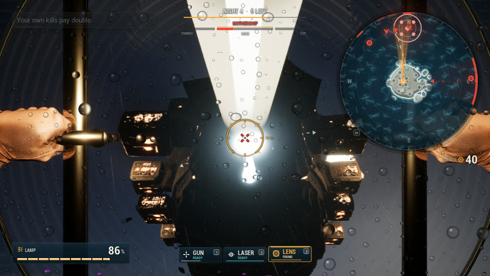

Day 2 Friday 13 November
All times in this log are Danish time (CET, UTC+1): 6 hours ahead of New York, 9 hours ahead of Los Angeles. Point at a time to see it in your own.
Friday night: the first full package, half an hour of play, and a night of fixes
6 pictures 2 failures 12 min read
Checkpoint The first complete package, v1.0.0, at 21:46
This entry covers Friday from about 21:45 to just after midnight, when the second round of fixes landed. It was written after midnight from the lanes' notes and boards and is dated 23:30 so that it stands with the day it tells. The next entry, the first of Saturday, tells how the game got its ending.
The first full package, 21:46
At 21:46 the integrator packaged the main branch with every lane's work merged: FYR v1.0.0, a Shipping build in a zip of 962.7 MB with 65 files and one program at the top; the title shows the version and the build's stamp. The checks: it starts from a fresh unzip, it opens no listening network port, the zip holds no project, source, asset or debug file, and none of the agents' editor tooling is inside the program. It was also looked at in the packaged game itself: the loading screen, the title, the hut with its stove, telephone, film camera and bench.
On size, plainly: it is under one gigabyte when a gigabyte is counted as 1,024 megabytes, and just over it (1,009,415,552 bytes) when counted in thousands. The upload page is expected to count the first way. If it refuses the file, the entry goes up another way.
The integrator's note also listed what was not in it or not checked:
- The master volume slider in the sound settings does nothing on Windows: the engine writes that value itself every frame. The fix is one line, but it would make the game about 2 dB quieter at the saved setting, so it waits for the developer's word.
- No agent could record the packaged game's sound: a game that runs off screen is muted by the engine for lack of focus, and the agents open no window on the developer's screen. His ears were the test.
- No records screen. Scouts inside the lamp's beam still blow out to white. Frame times were not measured on this build.
Half an hour of play, and a list
Between about 21:50 and 22:20 the developer played the package for half an hour. He liked it and said so, and he came back with a list. His notes, retold:
- Easy was too easy, and the great lens came too early: it was on offer from Night 3 and killed whatever it touched at once.
- On foot, the mouse did not look around. Up from the PC and out of the hut, the pointer stayed on screen.
- A step of about ten centimetres stopped him dead.
- A turret by the quay stood inside the rock.
- Corners of the rock were pitch dark, with no light anywhere. He wanted a flashlight, a jump, and a key back to the hut.
Five more notes followed later in the night:
- He got stuck in a crack between the boulders.
- The game forgot his last weapon: every night began on the gallery gun, whatever he had used before.
- Getting back to the PC should be one key from anywhere.
- The card on the title for the game in progress should be redone, and the menus made smaller.
- A blinding white light at the lens when he fought the mothership.
He also listed things in the world he wants to use: the kettle, the books, the bunk, and the film camera playing back the mothership's end. They are written down for Saturday.
What became of each, that night
Two lanes took the list: a fix lane for everything on foot and at the lens, and a balance lane for the numbers (next section). The fix lane's first round was merged at 23:21, its second at 00:02. Each fix was proven by a run with pictures and log lines before it went in.
The mouse. Getting up from the PC never told the part of the game that owns the pointer, so the plan's pointer mode stayed on, and the mouse only looked around while a button was held. Now the pointer goes and the mouse is taken in the frame he stands up, and it comes back when he sits down, after the pause menu, and when the window gets its focus back. The log proves each change. How it feels in the hand, and switching to another window and back, no script can test; the developer's hand is the test.
The step and the crack. The keeper walks on an invisible walk mesh laid over the rock. Between the boulders it has creases up to a metre deep with sides of 60 to 70 degrees, and the old walker read those steep faces as walls. In the first round he began to go by heights instead: anything within 55 cm up or down is walked, creases are stepped across, and only cliffs and the sea stop him. Space jumps, and Q out on the rock takes him back to the hut's door. A script walked the whole rock on a grid: 1,695 square metres reached, all ten turret pads on the rock at their own level, and the routes from the hut to the tower door, up and down the iron stair, and to the quay and back. In the second round the creases and pits, up to 1.5 m deep, were closed level as one surface (10,519 cells of 25 cm), every prop on the rock was made solid, and a safety net was added: if he ever ends up under the ground it lifts him, and if he pushes for a second and a half without moving it puts him on open ground. The camp round the hut, surveyed in 15 cm cells, has no place left where he can be trapped. The rock, in 25 cm cells, still has six small ones, on the west rim and beside the iron stair; the net frees him there.
Back to the PC. E now takes him to the PC from anywhere: at once when he stands beside the chair, after a half-second fade from anywhere else. Q still takes him to the hut's door, and the key hints and the settings' list of keys say what each key does.
The turret in the rock. Pad 9, on the quay, stood in the rock's flank, with stone 1.19 m above the turret's plate. Its mount was moved 1.2 m seaward onto the open deck, and its arc narrowed to 70 degrees so the barrel never swings over the boulders behind it. Pad 3's arc was narrowed too: the heavy gun's barrel reached the hut's wall at the end of its swing. Then every one of the 14 pads was photographed in daylight with each of the four turret kinds on it.


Before


After
The dark. F is a flashlight now: a warm spot with a soft edge that casts shadows. A lamp on a bracket hangs over the hut's door and over the tower's door, seven storm lanterns stand on iron posts along the way to the tower, down the paving and on the quay, and the hut's window glows. On foot under a dark sky the game adds a cool fill from the sky and a little more exposure, so the shadow side of anything is never pure black. The lamps are lit only before a night, in the hut and on the walk, and the view from the gallery gun was checked side by side with the old one: it is unchanged.


Before


After
The last weapon. The station he chose last is remembered from night to night and in the save. In the test, Nights 2 and 4 began on the laser and Night 3 on the gun after he had picked it; Continue on the title started on the laser.
The blinding light at the lens. Reproduced and found. While the mothership drains the lamp it sends down a beam 3 to 4 metres wide and very bright, and that beam ended in the lamp, exactly where the lens's eye sits. So for each six-second drain the whole view through the lens went white. The beam now stops at the lantern's glass, is never more than a few degrees of the view wide at its near end, and dims close to the eye; the harvester's beam does the same, and the lens's own splash of heat is capped by its distance.


Before


After
Not fixed: in the same test, the view went white once more for about a second, when the lens was aimed at a harvester close by while it was drinking from the lamp. The harvester's open eye or the lens's own shaft seen end-on are the two suspects; it is not pinned down yet.
The title. The card on the title that shows the game in progress was redone as he asked, the menus are smaller, and BACK carries an Esc key cap everywhere.
Still open after both rounds: the second of white on a harvester close in; the six small trap cells; turrets have no collision for the keeper, so he can step onto a turret's drum and stand inside it; and the feel of the mouse, the jump, Q and F, which only his hand can judge.
The balance pass, measured
The balance lane changed the numbers, and then let test bots play them: a weak bot that hits a third to a half of its shots on Easy, and a good bot on Normal and Hard.
- The great lens is earned now. The laser costs 500 and is offered after Night 2; the lens costs 1,500 and is offered only after Night 4, so bringing down the first mothership is what earns it. The guide says so on the way.
- Why the lens killed at once: every lens strike was counted as a hit on a saucer's weak eye, which doubles damage or more, so the lens really did 1,800 to 2,250 a second. It now does 700 a second to a small saucer with no eye bonus, 35% of that as splash, and 60% of it on a carrier's bays and the mothership's towers and core. The laser went from 450 to 350.
- Hulls: a harvester 1,100 (was 750), a carrier 1,400 (1,600); the first mothership's towers 1,000 and its core 3,600 (1,200 and 4,500).
- Money: a night held pays 50 times its number (was 100 times), and turrets cost half as much again: the twin gun 150, the flak gun 250, the searchlight 225, the heavy gun 375.
- The lamp mends 0.5% a second once 6 seconds pass without damage. It used to mend 1.2% a second after 4, and it mended even while a harvester was drinking from it.
- Easy was made harder: 10% fewer enemies, hulls at 85%, lamp damage at 65%, attacks a fifth later. Hard: 20% more, hulls at 115%, lamp damage at 110%, attacks sooner.
- Night 1 now ends with one harvester, 34 seconds in: scouts alone never reach the lamp of a player who fires at all.
What the bots showed, as the lamp at the end of each night (its lowest point in brackets where it was logged):
| Night | Easy, weak bot | Normal, good bot | Hard, good bot |
|---|---|---|---|
| 1 | 98 to 100% (94 to 100%) | 100% | 100% (96%) |
| 2 | 58 to 92% | 68% and 88% in two runs | 36% and 20% in two runs |
| 3 | 97% (95%) with three turrets; 19 to 43% with one turret and the laser | 92% (82%) | 47% (41%); in another run lost once, then 84% |
| 4, the mothership | 65 to 88% (53 to 77%) | 61% (50%) and 75% (65%) | 19% (9%) |
| Mothership's core broken, after the first hit | 27 to 37 s | 28 s | 34 s |
| Credits after Night 4 | about 2,050 to 2,115: the lens bought for Night 5 | 2,083 | 2,120 |
On Normal, Nights 5 to 7 left the lamp untouched for a perfect shot with the lens and 11 to 14 turrets, and then Night 8 was a wall: lost once, held the second time with 21% left.
The disk filled to zero
Next
Saturday is the developer's day to play the game, refine it and hand it in. First he plays the fixes: the mouse on foot, the jump, the flashlight, the way back to the PC, the lens against the mothership, and the new numbers on Easy.